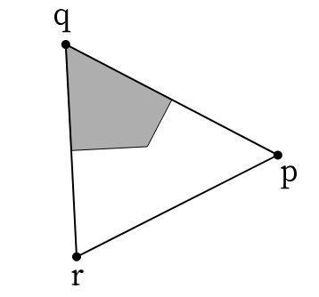

from triangulax.triangular import TriMeshgeometry: Mesh geometry
Using the half-edge mesh and the adjacency-like operators it defines, we can compute all sorts of geometric quantities of interest: edge lengths, cell areas, curvature in 3d, etc.
Discrete exterior calculus and discrete Hodge star
Note: triangle area, cell area, edge length, and dual edge lengths are what’s required for discrete exterior calculus.
# load test data
mesh = TriMesh.read_obj("../test_meshes/disk.obj")
hemesh = msh.HeMesh.from_triangles(mesh.vertices.shape[0], mesh.faces)
geommesh = msh.GeomMesh(*hemesh.n_items, mesh.vertices, mesh.face_positions)
mesh_3d = TriMesh.read_obj("../test_meshes/disk.obj", dim=3)
geommesh_3d = msh.GeomMesh(*hemesh.n_items, mesh_3d.vertices, mesh_3d.face_positions)Warning: readOBJ() ignored non-comment line 3:
o flat_tri_ecmc
Warning: readOBJ() ignored non-comment line 3:
o flat_tri_ecmcEdge lengths, areas, and normals
get_he_length
def get_he_length(
vertices:Float[Array, 'n_vertices dim'], hemesh:HeMesh
)->Float[Array, 'n_hes']:
Get lengths of half-edges (triangulation/primal edges).
get_face_centroids
def get_face_centroids(
vertices:Float[Array, 'n_vertices dim'], hemesh:HeMesh
)->Float[Array, 'n_faces dim']:
Compute centroids (barycenters) of triangular faces.
get_barycentric_cell_areas
def get_barycentric_cell_areas(
vertices:Float[Array, 'n_vertices dim'], hemesh:HeMesh
)->Float[Array, 'n_vertices']:
Get area of barycentric dual cell around each vertex. Defined as 1/3 sum of adjacent triangle areas.*
get_oriented_triangle_areas
def get_oriented_triangle_areas(
vertices:Float[Array, 'n_vertices dim'], hemesh:HeMesh
)->Float[Array, 'n_faces dim']:
Compute oriented triangle areas in a mesh. In 3d, this is a vector.
get_triangle_areas
def get_triangle_areas(
vertices:Float[Array, 'n_vertices dim'], hemesh:HeMesh
)->Float[Array, 'n_faces']:
Compute triangle areas in a mesh.
get_edge_normals
def get_edge_normals(
vertices:Float[Array, 'n_vertices 3'], # Vertex positions.
hemesh:HeMesh, # Half-edge mesh.
)->Float[Array, 'n_hes 3']: # Unit normal per half-edge.
Unit mid-edge normals: normalized average of the two adjacent face normals.
For boundary edges, the normal of the single adjacent face is used. Indexed per half-edge; twin half-edges carry identical normals.
get_vertex_normals
def get_vertex_normals(
vertices:Float[Array, 'n_vertices dim'], hemesh:HeMesh
)->Float[Array, 'n_vertices dim']:
Compute per-vertex unit normals by area-weighted averaging over adjacent faces.
get_triangle_normals
def get_triangle_normals(
vertices:Float[Array, 'n_vertices dim'], hemesh:HeMesh
)->Float[Array, 'n_faces dim']:
Compute per-face unit normals. In 2d, this just returns +/-1.
get_dihedral_angles
def get_dihedral_angles(
vertices:Float[Array, 'n_vertices dim'], hemesh:HeMesh
)->Float[Array, 'n_hes']:
Get signed dihedral angles (angle between adjacent face normals).
Positive for convex edges, negative for concave. The sign is determined by the edge direction
Total volume and surface area
get_area
def get_area(
vertices:Float[Array, 'n_vertices dim'], hemesh:HeMesh
)->Float[Array, '']:
Total surface area.
get_volume
def get_volume(
vertices:Float[Array, 'n_vertices dim'], hemesh:HeMesh
)->Float[Array, '']:
Signed volume of a closed triangulated surface (sums tetrahedra volumes relative to the origin).
Dual and Voronoi construction
set_voronoi_face_positions
def set_voronoi_face_positions(
geommesh:GeomMesh, hemesh:HeMesh
)->GeomMesh:
Set face positions of geommesh to the circumcenters of the faces defined by hemesh.
get_voronoi_face_positions
def get_voronoi_face_positions(
vertices:Float[Array, 'n_vertices dim'], hemesh:HeMesh
)->Float[Array, 'n_faces dim']:
Get face positions of geommesh to the circumcenters of the faces defined by hemesh.
get_oriented_dual_he_length
def get_oriented_dual_he_length(
vertices:Float[Array, 'n_vertices 2'], face_positions:Float[Array, 'n_faces 2'], hemesh:HeMesh
)->Float[Array, 'n_hes']:
Compute lengths of dual edges. Boundary dual edges get length 1. Negative sign = flipped edge.
get_dual_he_length
def get_dual_he_length(
face_positions:Float[Array, 'n_faces dim'], hemesh:HeMesh
)->Float[Array, 'n_hes']:
Get lengths of dual/cell half-edges.
a = get_dual_he_length(mesh.face_positions, hemesh)
b = get_oriented_dual_he_length(mesh.vertices, mesh.face_positions, hemesh)
jnp.allclose(a[~hemesh.is_bdry_edge], jnp.abs(b)[~hemesh.is_bdry_edge])Array(True, dtype=bool)# edges and dual edges should be orthogonal since we are using circumcenters
face_positions = get_voronoi_face_positions(mesh.vertices, hemesh)
edges = mesh.vertices[hemesh.orig]-mesh.vertices[hemesh.dest]
dual_edges = (face_positions[hemesh.heface]-face_positions[hemesh.heface[hemesh.twin]])
jnp.allclose(jnp.einsum('vi,vi->v', edges[~hemesh.is_bdry_edge], dual_edges[~hemesh.is_bdry_edge]), 0)Array(True, dtype=bool)# computing the signed edge length shows that there are some "flipped" edges.
dual_length = get_oriented_dual_he_length(mesh.vertices, face_positions, hemesh)
jnp.where((dual_length < -0.0) & ~hemesh.is_bdry_edge )[0]Array([ 9, 185, 191, 335, 363, 539, 545, 689], dtype=int64)Corner angles, Gaussian curvature, cotangent weights, and Voronoi edge lengths/areas
get_voronoi_corner_areas
def get_voronoi_corner_areas(
vertices:Float[Array, 'n_vertices dim'], hemesh:HeMesh
)->Float[Array, 'n_hes']:
Per-triangle Voronoi area of vertex x = dest[he]: A_vor(x, T) = (||e(he)||^2 * cot(opp_he) + ||e(nxt)||^2 * cot(opp_nxt)) / 8
Summing over all half-edges incident to a vertex gives the Voronoi cell area. Computed from cotangent weights. Accurate in any dimension.
get_voronoi_edge_lengths
def get_voronoi_edge_lengths(
vertices:Float[Array, 'n_vertices dim'], hemesh:HeMesh
)->Float[Array, 'n_hes']:
Voronoi dual edge lengths computed from cotangent weights. Accurate in any dimension.
get_cotan_weights_per_edge
def get_cotan_weights_per_edge(
vertices:Float[Array, 'n_vertices dim'], hemesh:HeMesh
)->Float[Array, 'n_hes']:
Average of cotangent of angles opposite to edge.
get_cotan_weights_per_he
def get_cotan_weights_per_he(
vertices:Float[Array, 'n_vertices dim'], hemesh:HeMesh
)->Float[Array, 'n_hes']:
Cotangent of angle opposite to half-edge. 0 for boundary half-edges.
get_angle_sum
def get_angle_sum(
vertices:Float[Array, 'n_vertices dim'], hemesh:HeMesh
)->Float[Array, 'n_vertices']:
Angle sum around vertices. 2*pi - angle_sum measures Gaussian curvature.
get_corner_angles
def get_corner_angles(
vertices:Float[Array, 'n_vertices dim'], hemesh:HeMesh
)->Float[Array, 'n_hes']:
Get angles in mesh corners (opposite to half-edges). 0 for boundary half-edges.
angles = get_corner_angles(mesh.vertices, hemesh)
np.allclose(get_angle_sum(mesh.vertices, hemesh)[~hemesh.is_bdry], 2*jnp.pi) # mesh is not curvedTruejnp.allclose(1/jnp.tan(angles)[~hemesh.is_bdry_he],
get_cotan_weights_per_he(mesh.vertices, hemesh)[~hemesh.is_bdry_he])Array(True, dtype=bool)# we can either compute the Voronoi-length of a dual edge directly, or from the face positions
voronoi_edge_lengths = get_voronoi_edge_lengths(mesh.vertices, hemesh)
dual_edge_length = get_oriented_dual_he_length(mesh.vertices, mesh.face_positions, hemesh)jnp.allclose(voronoi_edge_lengths[~hemesh.is_bdry_edge], dual_edge_length[~hemesh.is_bdry_edge])Array(True, dtype=bool)a = get_voronoi_corner_areas(mesh.vertices, hemesh)Cell areas, perimeters, etc via corners
To compute, for instance, the cell area using the shoelace formula, you need to iterate around the faces adjacent to a vertex. This is not straightforward to vectorize because the number of adjacent faces per vertex can vary (there can be 5-, 6-, 7-sided cells etc.). One way to solve this is a scheme in which the lists of adjacent faces are “padded” in some manner, so that they are all the same length. This is cumbersome. Instead, let us split all “cell-based” quantities into contributions from “corners”, i.e., half-edges, like this:

Source: CGALTo compute the total area, we can sum over all half-edges \((r,p)\) opposite to a vertex \(q\).
Via this approach, one can also compute cell perimeter, etc.
get_voronoi_perimeters
def get_voronoi_perimeters(
vertices:Float[Array, 'n_vertices dim'], hemesh:HeMesh
)->Float[Array, 'n_vertices']:
Compute Voronoi cell perimeter for each vertex by summing dual edge lengths.
get_voronoi_areas
def get_voronoi_areas(
vertices:Float[Array, 'n_vertices dim'], hemesh:HeMesh
)->Float[Array, 'n_vertices']:
Compute Voronoi cell area for each vertex by summing the areas in adjacent triangles (incoming half-edges)
Important: This function computes the exact Voronoi cell area (in any dimension), but can lead to numerical instabilities for very obtuse triangles. For use cases where the cell area serves as a tool (e.g. for discretizing the area integral), prefer get_voronoi_areas_robust.
get_voronoi_areas_robust
def get_voronoi_areas_robust(
vertices:Float[Array, 'n_vertices dim'], hemesh:HeMesh
)->Float[Array, 'n_vertices']:
Compute mixed Voronoi cell area (AMixed) for each vertex.
Uses the robust formula from Meyer et al. that handles obtuse triangles: - Non-obtuse triangle: use Voronoi region area - Obtuse at vertex x: use area(T)/2 - Obtuse elsewhere: use area(T)/4
See Fig 4 from M Meyer, M Desbrun, P Schröder, A H Barr: “Discrete Differential-Geometry Operators for Triangulated 2-Manifolds”
# Voronoi perimeters
perimeters = get_voronoi_perimeters(mesh.vertices, hemesh)
print("Voronoi perimeters (mean):", perimeters[~hemesh.is_bdry].mean())
# face centroids
centroids = get_face_centroids(mesh.vertices, hemesh)
print("Face centroids shape:", centroids.shape)Voronoi perimeters (mean): 0.6346395879903053
Face centroids shape: (224, 2)# for comparison, compute the areas by mesh traversal
cell_areas = get_voronoi_areas(geommesh.vertices, hemesh)
cell_areas = cell_areas.at[hemesh.is_bdry].set(0)
cell_areas_iterative = _get_cell_areas_traversal(geommesh, hemesh)
error = jnp.abs(cell_areas_iterative-cell_areas)
print("Voronoi area max error:", error.max())Voronoi area max error: 4.85722573273506e-17cell_areas = get_voronoi_areas(mesh.vertices, hemesh)
cell_areas_robust = get_voronoi_areas_robust(mesh.vertices, hemesh)
cell_areas_igl = igl.massmatrix(geommesh.vertices, hemesh.faces, igl.MASSMATRIX_TYPE_VORONOI).diagonal()
err_igl = jnp.abs(cell_areas_igl-cell_areas)
err_igl_robust = jnp.abs(cell_areas_igl-cell_areas_robust)
err_igl.max(), err_igl_robust.max()(Array(0.00277929, dtype=float64), Array(1.38777878e-17, dtype=float64))Gaussian curvature
The Gaussian curvature at a vertex can be discretized using the angle defect:
\[K_i = \frac{1}{a_i} \left(2\pi - \sum_{f\sim i} \phi_{i,f} \right)\]
where the sum is over all triangles \(f\) neighboring vertex \(i\), and \(\phi_{i,f}\) is the angle in triangle \(f\) at vertex \(i\). We use the (robust) Voronoi cell area for the normalization \(a_i\) (so \(K_i\) is a density).
get_gaussian_curvature
def get_gaussian_curvature(
vertices:Float[Array, 'n_vertices dim'], hemesh:HeMesh
)->Float[Array, 'n_vertices']:
Discrete Gaussian curvature via the angle defect: (2π - Σθ_i) / A_i.
# Gaussian curvature should be 0 for a flat disk (interior vertices)
K = get_gaussian_curvature(mesh.vertices, hemesh)
print("Gaussian curvature (max interior):", jnp.abs(K[~hemesh.is_bdry]).max())Gaussian curvature (max interior): 5.6669428844931474e-14Mean curvature
Two methods are provided for computing per-vertex mean curvature.
Steiner (dihedral angle) formula: \[H_i = \frac{1}{4ai} \sum_{j\sim i} \ell_{ij} \theta_{ij} \] where \(\theta_{ij}\) are the dihedral angles between adjacent triangles.
Cotangent Laplacian formula: using \(\Delta\mathbf{x} = 2H\mathbf{n}\), \[H_i = -\frac{\mathbf{n}_i \cdot (\Delta\mathbf{x})_i}{2 a_i}\] where and \(\Delta\) is the cotangent Laplacian.
In both cases, we use the (robust) Voronoi cell area for the normalization \(a_i\).
get_mean_curvature_laplace
def get_mean_curvature_laplace(
vertices:Float[Array, 'n_vertices dim'], # Vertex positions.
hemesh:HeMesh, # Half-edge mesh.
normalize:bool=True, # Whether to normalize by the Voronoi cell area. If False, returns the integrated mean curvature.
)->Float[Array, 'n_vertices']: # Per-vertex mean curvature.
Compute mean curvature from the cotangent Laplacian: Δx = 2Hn.
Generally more accurate than the dihedral method, but can be unstable for meshes with very deformed (non-Delaunay) triangles.
get_mean_curvature_dihedral
def get_mean_curvature_dihedral(
vertices:Float[Array, 'n_vertices dim'], # Vertex positions.
hemesh:HeMesh, # Half-edge mesh.
normalize:bool=True, # Whether to normalize by the robust Voronoi cell area. If False, returns the integrated mean curvature.
)->Float[Array, 'n_vertices']: # Per-vertex mean curvature.
Compute mean curvature of triangulated mesh using Steiner approximation: H_i = 1/(4 A_i) * sum_j * theta_ij * l_ij where theta_ij is the dihedral angle between faces adjacent to edge ij, l_ij is the length of edge ij, and A_i is the robust Voronoi cell area around vertex i.
# Test mean curvature on sphere and torus against libigl
# --- Unit sphere ---
v_sphere, f_sphere = igl.read_triangle_mesh("../test_meshes/sphere_fine.obj")
v_sphere = v_sphere / np.linalg.norm(v_sphere, axis=-1, keepdims=True) # project to unit sphere
hemesh_sphere = msh.HeMesh.from_triangles(v_sphere.shape[0], f_sphere)
v_sphere_jax = jnp.array(v_sphere)
H_dihedral_sphere = get_mean_curvature_dihedral(v_sphere_jax, hemesh_sphere)
H_laplace_sphere = get_mean_curvature_laplace(v_sphere_jax, hemesh_sphere)
_, _, k1_s, k2_s, _ = igl.principal_curvature(v_sphere.astype(np.float64), f_sphere)
H_igl_sphere = (k1_s + k2_s) / 2
print("=== Unit Sphere (H_true = 1.0) ===")
print(f" igl: mean={np.mean(np.abs(H_igl_sphere)):.4f}, std={np.std(H_igl_sphere):.4f}")
print(f" dihedral: mean={float(jnp.mean(jnp.abs(H_dihedral_sphere))):.4f}, std={float(jnp.std(H_dihedral_sphere)):.4f}")
print(f" laplace: mean={float(jnp.mean(jnp.abs(H_laplace_sphere))):.4f}, std={float(jnp.std(H_laplace_sphere)):.4f}")Warning: readOBJ() ignored non-comment line 4:
o Icosphere=== Unit Sphere (H_true = 1.0) ===
igl: mean=1.1134, std=0.0033
dihedral: mean=1.0032, std=0.0004
laplace: mean=1.0000, std=0.0000# --- Torus ---
v_torus, f_torus = igl.read_triangle_mesh("../test_meshes/torus.obj")
hemesh_torus = msh.HeMesh.from_triangles(v_torus.shape[0], f_torus)
v_torus_jax = jnp.array(v_torus)
H_dihedral_torus = get_mean_curvature_dihedral(v_torus_jax, hemesh_torus)
H_laplace_torus = get_mean_curvature_laplace(v_torus_jax, hemesh_torus)
_, _, k1_t, k2_t, _ = igl.principal_curvature(v_torus.astype(np.float64), f_torus)
H_igl_torus = (k1_t + k2_t) / 2
print("\n=== Torus ===")
print(f" igl: mean={np.mean(np.abs(H_igl_torus)):.4f}, range=[{H_igl_torus.min():.4f}, {H_igl_torus.max():.4f}]")
print(f" dihedral: mean={float(jnp.mean(jnp.abs(H_dihedral_torus))):.4f}, range=[{float(H_dihedral_torus.min()):.4f}, {float(H_dihedral_torus.max()):.4f}]")
print(f" laplace: mean={float(jnp.mean(jnp.abs(H_laplace_torus))):.4f}, range=[{float(H_laplace_torus.min()):.4f}, {float(H_laplace_torus.max()):.4f}]")
# Correlation check
corr_dihedral = float(jnp.corrcoef(jnp.array(H_igl_torus), H_dihedral_torus)[0, 1])
corr_laplace = float(jnp.corrcoef(jnp.array(H_igl_torus), H_laplace_torus)[0, 1])
print(f"\n Correlation with igl: dihedral={corr_dihedral:.4f}, laplace={corr_laplace:.4f}")
# Note: the IGL quadratic fitting method does indeed give a different result than the Laplacian and dihedral methods (not a bug).
# The difference between Laplace and dihedral methods is mostly due to the area normalization (voronoi vs barycentric).Warning: readOBJ() ignored non-comment line 3:
o Torus
=== Torus ===
igl: mean=2.5613, range=[1.7344, 4.0399]
dihedral: mean=1.9623, range=[1.3356, 2.4479]
laplace: mean=1.9374, range=[1.3309, 2.4065]
Correlation with igl: dihedral=0.6268, laplace=0.6251Tangent spaces and parallel transport
This section defines tools to work with the tangent space of a surface, namely:
- Bases for the tangent space at each vertex and face. We implement two bases:
- Non-orthogonal local edge basis for faces. For a face with vertices \(a,b,c\), the basis is \(u=b-a, v=c-a\)
- Local orthonormal bases in 3d coordinate-space for the tangent space at each vertex and face. For a face \(a,b,c\), this basis has vectors \(e_1 = (b-a)/|b-a|, \; e_2 \perp e_1\).
- Parallel transport, which in the discrete setting means the rotation matrices that relate the local bases at adjacent triangles or vertices.
Based on Geometry Central.
# load a 3D mesh for testing tangent space functions
sphere = TriMesh.read_obj("../test_meshes/sphere.obj", dim=3)
hemesh_s = msh.HeMesh.from_triangles(sphere.vertices.shape[0], sphere.faces)
geommesh_s = msh.GeomMesh(*hemesh_s.n_items, sphere.vertices, sphere.face_positions)Warning: readOBJ() ignored non-comment line 3:
o Icosphereget_corner_scaled_angles
def get_corner_scaled_angles(
vertices:Float[Array, 'n_vertices dim'], # Vertex positions.
hemesh:HeMesh, # Half-edge mesh.
)->Float[Array, 'n_hes']: # Rescaled corner angles per halfedge.
Corner angles rescaled so they sum to 2π at interior vertices and π at boundary vertices.
Uses the same indexing convention as get_corner_angles: scaled_angles[he] is the rescaled angle at vertex dest[nxt[he]] (the vertex opposite halfedge he).
# test: scaled angles should sum to 2π at interior vertices
scaled = get_corner_scaled_angles(geommesh_s.vertices, hemesh_s)
scaled_sums = adj.sum_he_to_vertex_opposite(hemesh_s, scaled)
assert jnp.allclose(scaled_sums[~hemesh_s.is_bdry], 2*jnp.pi, atol=1e-10)
# for disk mesh (has boundary)
scaled_disk = get_corner_scaled_angles(geommesh.vertices, hemesh)
scaled_sums_disk = adj.sum_he_to_vertex_opposite(hemesh, scaled_disk)
assert jnp.allclose(scaled_sums_disk[hemesh.is_bdry], jnp.pi, atol=1e-10)get_face_tangent_basis
def get_face_tangent_basis(
vertices:Float[Array, 'n_vertices dim'], # Vertex positions in 3D.
hemesh:HeMesh, # Half-edge mesh.
)->Float[Array, '2 n_faces 3']: # Per-face tangent basis: result[0, f] = basisX, result[1, f] = basisY.
Orthonormal tangent basis (basisX, basisY) in 3D world coordinates per face.
Convention: For a face with vertices (v0, v1, v2) basisX equals (v1-v0) / |v1-v0|, and basisY = cross(basisX, face_normal).
Note: 3D meshes only (uses cross product).
get_face_edge_basis
def get_face_edge_basis(
vertices:Float[Array, 'n_vertices dim'], # Vertex positions.
hemesh:HeMesh, # Half-edge mesh.
)->Float[Array, '2 n_faces dim']: # Per-face tangent basis: result[0, f] = u, result[1, f] = v.
Edge basis in 3D world coordinates per face.
For a triangle with vertices (v0, v1, v2), the edge basis is defined by: u = v1 - v0, v = v2-v0 Note: This basis is not orthonormal.
# test: face tangent basis orthonormality
face_basis = get_face_tangent_basis(geommesh_s.vertices, hemesh_s)
bx, by = face_basis
face_normals = get_triangle_normals(geommesh_s.vertices, hemesh_s)
# bx · by ≈ 0, |bx| ≈ 1, |by| ≈ 1
print("Max bx·by:", jnp.abs(jax.vmap(jnp.dot)(bx, by)).max())
assert jnp.allclose(jax.vmap(jnp.dot)(bx, by), 0., atol=1e-10)
assert jnp.allclose(jnp.linalg.norm(bx, axis=-1), 1., atol=1e-10)
assert jnp.allclose(jnp.linalg.norm(by, axis=-1), 1., atol=1e-10)
# bx and by should be orthogonal to face normal
print("Max bx·n:", jnp.abs(jax.vmap(jnp.dot)(bx, face_normals)).max())
assert jnp.allclose(jax.vmap(jnp.dot)(bx, face_normals), 0., atol=1e-10)
assert jnp.allclose(jax.vmap(jnp.dot)(by, face_normals), 0., atol=1e-10)Max bx·by: 2.72848794068397e-16
Max bx·n: 1.1102230246251565e-16get_vertex_tangent_basis
def get_vertex_tangent_basis(
vertices:Float[Array, 'n_vertices dim'], # Vertex positions in 3D.
hemesh:HeMesh, # Half-edge mesh.
)->Float[Array, '2 n_vertices dim']: # Per-vertex tangent basis: result[0, v] = basisX, result[1, v] = basisY.
Orthonormal tangent basis (basisX, basisY) in 3D world coordinates per vertex.
Convention: basisX is aligned with the vertex’ incident halfedge projected onto the vertex tangent plane. basisY = cross(basisX, vertex_normal).
Note: 3D meshes only (uses cross product).
# test: vertex tangent basis orthonormality
vtx_basis = get_vertex_tangent_basis(geommesh_s.vertices, hemesh_s)
bx_v, by_v = vtx_basis
vtx_normals = get_vertex_normals(geommesh_s.vertices, hemesh_s)
print("Max bx·by:", jnp.abs(jax.vmap(jnp.dot)(bx_v, by_v)).max())
assert jnp.allclose(jax.vmap(jnp.dot)(bx_v, by_v), 0., atol=1e-8)
assert jnp.allclose(jnp.linalg.norm(bx_v, axis=-1), 1., atol=1e-8)
assert jnp.allclose(jnp.linalg.norm(by_v, axis=-1), 1., atol=1e-8)
# orthogonal to vertex normal
print("Max bx·n:", jnp.abs(jax.vmap(jnp.dot)(bx_v, vtx_normals)).max())
assert jnp.allclose(jax.vmap(jnp.dot)(bx_v, vtx_normals), 0., atol=1e-8)
assert jnp.allclose(jax.vmap(jnp.dot)(by_v, vtx_normals), 0., atol=1e-8)Max bx·by: 7.063619505390424e-17
Max bx·n: 1.6653345369377348e-16Parallel transport
To define parallel transport across an edge (between the tangent spaces of two adjacent triangles) or along an edge (between the tangent spaces of two adjacent vertices), we proceed as follows:
- Find the coordinates of the shared edge vector \(\mathbf{e}_{ij} =\mathbf{v}_i-\mathbf{v}_j\) in the two local orthonormal bases, \((x, y)\) and \((x', y')\)
- Compute the (minimal) rotation matrix that maps \((x, y)\) to \((x', y')\).
This defines two angles \(\phi_{ij}^v, \phi_{ij}^f\) for each half-edge, the discrete parallel transport map along (“v”) or across (“f”) the half edge.
get_transport_across_halfedge
def get_transport_across_halfedge(
vertices:Float[Array, 'n_vertices dim'], # Vertex positions.
hemesh:HeMesh, # Half-edge mesh.
)->Float[Array, 'n_hes']: # Transport angle per halfedge (radians). NaN for boundary halfedges.
Rotation angle to transport a tangent vector from one face to the adjacent face across a halfedge.
Applying this rotation to a vector in the frame of heface[he] gives the same vector in the frame of heface[twin[he]]. For boundary half edges, this is set to 0 (no transport since there’s only one face).
transports = get_transport_across_halfedge(geommesh_s.vertices, hemesh_s)
jnp.allclose(transports - transports[hemesh_s.twin], 0)Array(True, dtype=bool)get_transport_along_halfedge
def get_transport_along_halfedge(
vertices:Float[Array, 'n_vertices dim'], # Vertex positions.
hemesh:HeMesh, # Half-edge mesh.
)->Float[Array, 'n_hes']: # Transport angle per halfedge (radians). NaN for boundary halfedges.
Rotation angle to transport a tangent vector from one vertex to the next vertex along a halfedge.
Applying this rotation to a vector in the frame of a vertex gives the same vector in the frame of the next vertex along the halfedge
transports = get_transport_along_halfedge(geommesh_s.vertices, hemesh_s)
jnp.allclose(transports - transports[hemesh_s.twin], 0)Array(True, dtype=bool)